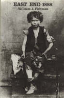

<body bgcolor="#FFFFFF" text="#000000" link="#0000FF" vlink="#CC0000" alink="#CC0000"><center><hr width="350" size="1" align="center" noshade>Documents in minute detail the social, political, and economic life in the notorious slums of East London<hr width="350" size="1" align="center" noshade><p><a href="https://cdcshoppingcart.uchicago.edu/Cart/ChicagoBook.aspx?ISBN=9780877225720&&PRESS=temple" target="_top">Buy this book!</a> | <a href="https://cdcshoppingcart.uchicago.edu/Cart/Cart.aspx?PRESS=temple" target="_top">View Cart</a> | <a href="https://cdcshoppingcart.uchicago.edu/Cart/Cart.aspx?PRESS=temple" target="_top">Check Out</a></p><p></p></center><!--none//--><h1>East End 1888</h1>
<H2>Life in a London Burough Among the Laboring Poor</H2>
<h3>William J. Fishman</h3>
<P>cloth 0-87722-572-9 $39.95, Oct 88, <FONT COLOR=#990033>Out of Stock Unavailable</FONT>
<BR> 352 pp
</P><BLOCKQUOTE><I>"This lively, well-written, and well-researched treatment of urban poverty in England includes fresh material from local newspapers and Poor Law records that I have not seen in other similar books. It reports much interesting detail on a variety of topics-crime, prostitution, poverty, Jewish urban life. Moreover, there is no recent good book on London�s East End."</I>
<br>&#151<b>Lynn Lees</b>, University of Pennsylvania<I></I></BLOCKQUOTE>
<p><I>East End I888</I> documents in minute detail the social, political, and economic life in the notorious slums of East London during the reign of Queen Victoria. The setting for Jack the Ripper�s atrocities, East End was synonymous with crime, filth, disease, and the dregs of humanity. W. J. Fishman focuses on a single year, one century ago and one century after the storming of the Bastille. Poignant accounts of homeless families choosing starvation rather than submitting to the inhumanity and separation of the workhouse are contrasted with lively reports of entertainment in music halls and "penny gaffs" or freak shows, where Joseph Merrick, The Elephant Man, was discovered. Providing numerous excerpts from contemporary newspapers, police records, workhouse journals, novels, medical reports, church sermons, and political debates, Fishman illuminates a slice of life in Victorian England.
<BR>&nbsp;<h2>Reviews</h2>
<p><I>"As a reference text the book is eminently useful, primarily for the rich anecdotes excavated from local sources and its ability to evoke feelings of what it was really like to live in London�s East End in the 1880s. The author is well respected and an acknowledged expert on the history of the East End."</I>
<br>&#151<b>David Green</b>, Kings College
<BR>&nbsp;<H2>About the Author(s)</H2>
<P><b>William J. Fishman</b> is Professor of Political Studies at Queen Mary College, University of London.</P>
<BR><H2>Subject Categories</H2>
<p><A HREF="/tempress/history.html" TARGET="_top">History</a>
</p>
<p align="center"><a href="https://cdcshoppingcart.uchicago.edu/Cart/ChicagoBook.aspx?ISBN=9780877225720&&PRESS=temple" target="_top">Buy this book!</a> | <a href="https://cdcshoppingcart.uchicago.edu/Cart/Cart.aspx?PRESS=temple" target="_top">View Cart</a> | <a href="https://cdcshoppingcart.uchicago.edu/Cart/Cart.aspx?PRESS=temple" target="_top">Check Out</a></p><p><font face="Arial" size="1"><a href="copyright.html" onMouseOver="window.status='Web Copyright Policy';return true;" onMouseOut="window.status=''" title="Web Copyright Policy">&copy;</a> 2015 <a href="http://www.temple.edu" target="new" onMouseOver="window.status='Link to Temple University home page';return true;" onMouseOut="window.status=''" title="Link to Temple University home page">Temple University</a>. All Rights Reserved. http://www.temple.edu/tempress/titles/609_reg.html</font></p>